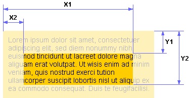

Устанавливает метод расчета ширины и высоты элемента.
- content-box – Свойства width и height задают ширину и высоту содержимого элемента, не включая в себя значения границ border, полей padding и отступов margin.
- brder-box – Свойства width и height задают ширину и высоту элемента вместе со значениями границ border и полей padding, не включая значения отступов margin.
- padding-box – Свойства width и height задают ширину и высоту элемента вместе со значениями полей padding, не включая значения границ border и отступов margin. Пример
Значения:
Параметр устанавливает, с какой стороны элемента запрещено его обтекание другими элементами.
Если установлено обтекание элемента с помощью параметра float, свойство clear отменяет его действие для указанных сторон.
- both – Отменяет обтекание элемента одновременно с правого и левого края. Этот аргумент рекомендуется установить, когда требуется снять обтекание элемента, но неизвестно точно с какой стороны.
- left – Отменяет обтекание с левого края элемента. При этом все другие элементы на этой стороне будут опущены вниз, и располагаться под текущим элементом.
- right – Отменяет обтекание с правой стороны элемента.
- none – Отменяет действие данного свойства и обтекание элемента происходит, как задано с помощью параметра float или других настроек.
Значения:
Свойство clip определяет область позиционированного элемента, в которой будет показано его содержимое.
Все, что не помещается в эту область, будет обрезано и становится невидимым.
На данный момент единственно доступная форма области – прямоугольник. Все остальное остается только в мечтах.
Параметр clip работает только для абсолютно позиционированных элементов.
clip: rect(Y1, X1, Y2, X2) | auto
В качестве значения используется расстояние от края элемента до области вырезки, которое задается в px, em, процентах и других единицах измерения. Если край области нужно оставить без изменений, следует поставить параметр auto, положение остальных значений показано на рисунке:
Определяет количество колонок в многоколоночном тексте.
Например:div {column-count: 3;}
div {column-count: auto;} /* вычисляется на основе свойств column-width и column-gap */
Определяет расстояние между колонками в многоколоночном тексте.
Например:
div {column-gap: 30px;}
div {column-gap: 2rem;}
Определяет разделительную линию между колонками в многоколоночном тексте.
Например: div {column-rule: 1px solid #e31e24;}
Определяет минимальную ширину колонки многоколоночного текста.
Реальная ширина колонки может быть больше введённого значения. При сокращении ширины текст выстраивается в одну колонку.
outline: [outline-width || outline-style || outline-color]
Например:
div {column-width: 350px;}
div {column-width: auto;} /* вычисляется на основе свойств column-count и column-gap */
Определяет количество и ширину колонок многоколоночного текста.
columns: [column-count || column-width] Например:div {columns: 3 350px;} div {columns: 2 auto;}
Определяет, как элемент должен быть отображен в документе.
- block - Блочный элемент. Соответствует блочным элементам HTML, т. е. отображается как отдельный абзац. При его отображении генерируется главный прямоугольник блока, в котором располагаются объемлющие прямоугольники потомков данного элемента.
- flex - Блочный flex-контейнер для дочерних flex-элементов в методе позиционирования Flexbox.
- grid - Сетка CSS Grid.
- inline - Строчный элемент. Соответствует текстовым элементам HTML, т. е. отображается как текстовые строки внутри текущего абзаца, точнее внутри главного прямоугольника соответствующего блока.
- inline-block - Это значение генерирует блочный элемент, который обтекается другими элементами Web-страницы подобно строчному элементу. Фактически такой элемент по своему действию похож на img. При этом его внутренняя часть форматируется как блочный элемент, а сам элемент - как строчный.
- inline-flex - Строчный flex-контейнер для дочерних flex-элементов в методе позиционирования Flexbox.
- inline-table - Определяет, что элемент является таблицей, как при использовании тега table, но при этом таблица является встроенным элементом и происходит ее обтекание другими элементами, например, текстом.
- list-item - Элемент списка. Отображается как блочный элемент с добавлением к нему маркера элемента списка.
- none - Элемент и все его потомки игнорируются при отображении.
- run-in - Устанавливает элемент как блочный или встроенный в зависимости от контекста.
- table - Определяет, что элемент является блочной таблицей подобно table.
- table-caption - Задает заголовок таблицы подобно caption.
- table-cell - Указывает, что элемент представляет собой ячейку таблицы подобно td.
- table-column - Назначает элемент колонкой таблицы подобно col.
- table-column-group - Определяет, что элемент является группой одной или более колонок таблицы подобно colgroup.
- table-header-group - Группа надзаголовков таблицы подобно thead.
- table-footer-group - Группа подзаголовков таблицы подобно tfoot.
- table-row - Элемент отображается как строка таблицы подобно tr.
- table-row-group - Создает структурный блок, состоящий из нескольких строк таблицы подобно tbody.
Значения:
Определяет, по какой стороне будет выравниваться элемент, при этом остальные элементы будут обтекать его с других сторон.
Когда значение параметра float равно none, элемент выводится на странице как обычно, самое большое - одна строка обтекающего текста может быть на той же линии, что и сам элемент.
- left - Выравнивает элемент по левому краю, а все остальные элементы, вроде текста, огибают его по правой стороне.
- right - Выравнивает элемент по правому краю, а все остальные элементы огибают его по левой стороне.
- none - Обтекание элемента не задается.
Значения:
Устанавливает высоту блочных или заменяемых элементов (к ним, например, относится тег img).
значение | проценты | auto
По умолчанию высота не включат значения границ border, полей padding и отступов margin. Изменить метод расчета высоты можно с помощью свойства box-sizing.
Устанавливает максимальную высоту элемента
Например: div.block {max-height: 200px;}
Устанавливает максимальную ширину элемента.
Значение ширины элемента будет вычисляться в зависимости от значений свойств width, max-width и min-width.
Устанавливает минимальную высоту элемента
Например: div.block {min-height: 100px;}
Устанавливает минимальную ширину элемента.
Если окно браузера достигает заданной минимальной ширины элемента, то его ширина остается неизменной и появляется горизонтальная полоса прокрутки.
Определяет соотношение сторон таких элементов, как img и video, если у них задана ширина или высота.
Свойство object-fit может как сохранять исходные пропорции элемента, так и искажать их.- fill - Размер элемента соответствует заданному, пропорции исходного изображения игнорируются,
- contain - Элемент масштабируется, сохраняя пропорции так, чтобы целиком поместиться в заданную область,
- cover - Элемент масштабируется, сохраняя пропорции так, чтобы полностью заполнить заданную область,
- none - Размер элемента остаётся исходным, заданный размер игнорируется,
- scale-down - Размер элемента соответствуют меньшему из размеров при указании значения none или contain.
Значения:
Задает смещение изображения при использовании свойства object-fit.
По умолчанию - в центре.
У этого свойства два значения:
положение по горизонтали (может быть - left, center, right) и
вертикали (может быть - top, center, bottom).
Кроме использования ключевых слов смещение можно задавать в процентах, пикселах или других единицах. Если применяются ключевые слова, то порядок их следования не имеет значения, при процентной записи вначале задается смещение по горизонтали, а затем – по вертикали.
Управляет отображением содержания блочного элемента, если оно целиком не помещается и выходит за область заданных размеров.
- visible – Отображается все содержание элемента, даже за пределами установленной высоты и ширины.
- hidden – Отображается только область внутри элемента, остальное будет обрезано.
- scroll – Всегда добавляются полосы прокрутки.
- auto – Полосы прокрутки добавляются только при необходимости.
Значения:
Поддержка браузерами overflow Свойства overflow-x и overflow-y отображают полосу прокрутки по горизонтали или вертикали соответственно. Аргументы те же, что и для overflow. Поддержка браузерами overflow-x Поддержка браузерами overflow-y
Предназначен для отображения или скрытия элемента, включая рамку вокруг него и фон.
При скрытии элемента, хотя он и становится не виден, место, которое элемент занимает, остается за ним. Если предполагается вывод разных элементов в одно и то же место экрана, для обхода этой особенности следует использовать абсолютное позиционирование или воспользоваться свойством display.
- hidden - Элемент становится невидимым или, точнее, полностью прозрачным, поскольку он продолжает участвовать в форматировании страницы,
- visible - Отображает элемент как видимый,
- collapse - Если это значение применяется не к строкам или колонкам таблицы, то результат его использования будет таким же, как hidden. В случае использования collapse для содержимого ячеек таблиц, то они реагируют, словно к ним было добавлено стилевое свойство display: none. Иными словами, заданные строки и колонки убираются, а таблица перестраивается по новой.
Значения:
Объектная модель: document.getElementById("elementID").style.visibility = "visible"; document.all["elementID"].style.visibility = "visible";
Устанавливает ширину блочных или заменяемых элементов (к ним, например, относится тег ).
значение | проценты | auto
По умолчанию ширина не включает значения границ border, полей padding и отступов margin.
Изменить метод расчета ширины можно с помощью свойства box-sizing.